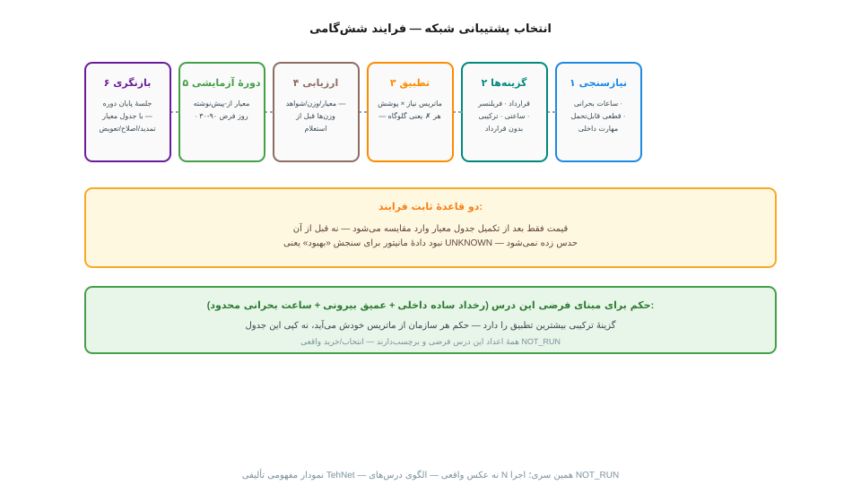

وضعیت درس: DRAFT / NOT_DEPLOYED — در انتظار مرور. (درس مصوب سرفصل N6: انتخاب پشتیبانی)
آموزش از سری پشتیبانی؛ مخاطب: مدیر کسبوکار و مدیر IT.
سناریوی کاملاً فرضی و آموزشی با دادهٔ ساختگی؛ هیچ پیمانکار/قیمت/پروژهٔ واقعیای در این درس نیست و هیچ اجرای واقعی NOT_RUN است.
نمودار مفهومی و تألیفی است (نه عکس واقعی).
انتخاب پشتیبانی شبکه یک فرایند ششگامی است: نیازسنجی (ساعات بحرانی، حداکثر قطعی قابلتحمل، مهارت داخلی، داراییها) → فهرست گزینهها (قرارداد پیمانکار، فریلنسر ساعتی، ترکیبی، بدون قرارداد) → تطبیق نیاز با پوشش (هر نیاز کدام گزینه جواب میدهد؟) → ارزیابی ساختاریافته (جدول معیار/وزن با شواهد، نه حس) → دورهٔ آزمایشی کوتاه با معیار از-پیشنوشته → بازنگری دورهای. اشتباه رایج: انتخاب با قیمت اولیه یا رابطهٔ شخصی، بدون نوشتن «چه چیزی باید پوشش داده شود» — نتیجه، قراردادی است که در اولین قطعی واقعی جواب نمیدهد. سؤالات قرارداد/SLA بلافاصله بعد از انتخاب ساختار میآیند (درس مکمل قرارداد و SLA).
| بند | مقدار فرضی |
|---|---|
| سازمان | دفتر ۱۲ نفره + ۴ دوربین + NAS — بدون کارمند IT تماموقت (فرضی) |
| داراییهای شبکه | روتر hEX + سوئیچ CRS326 + AP + NAS (فرضی، الگوی N1) |
| الگوی رخداد فرضی | ماهانه ۱-۲ رخداد؛ بیشتر «قطعی دسترسی» و «کندی»؛ هر فصل یک رخداد سختافزاری (فرض آموزشی) |
| مهارت داخلی | یک کارمند آشنا با مقدمات (برقاندازی، کابل) — نه پیکربندی |
| ساعت بحرانی | ۸:۳۰ تا ۱۷:۰۰ شنبه تا چهارشنبه |
| بودجه | متوسط — عدد واقعی UNKNOWN تا استعلام؛ در این درس فقط ساختار مقایسه |
| اجرای واقعی | NOT_RUN — انتخاب آموزشی |
| سؤال نیازسنجی | چرا تعیینکننده است | منبع پاسخ |
|---|---|---|
| ساعات بحرانی دقیقاً کیست؟ | پوشش 24-7 هزینه و مکانیزم جدا میخواهد؛ اگر قطعی جمعهشب بیاثر است، 24-7 نخرید | صاحب کسبوکار + جدول ساعات کار |
| حداکثر قطعی قابلتحمل چند ساعت است؟ | فاصلهٔ این عدد با «زمان رفع» پیشنهادها معیار اصلی تطبیق است | صاحب کسبوکار + تجربهٔ رخدادهای قبلی |
| چه چیزی داخلی حل میشود؟ | برقاندازی/کابل/ریاستارت = داخلی؛ پیکربندی/عیب عمیق = بیرونی | مصاحبه با کارمند آشنا + ثبت رخدادهای گذشته (الگوی N4) |
| داراییها و پیچیدگی چیست؟ | تعداد دستگاه و VLANها دامنهٔ پشتیبانی را تعیین میکند | فهرست دارایی از مستندات (الگوی N1/N4) |
| دادهٔ واقعی از وضعیت موجود هست؟ | مانیتورینگ (الگوی N2) عدد میدهد؛ بدون آن نیازسنجی حدسی است | گزارش مانیتور یا ثبت رخدادها — نبود = UNKNOWN با برچسب صریح |
| گزینه | ساختار | چه چیزی باید برای هر پیشنهاد احراز شود (از نام مدل برنمیآید) | ریسک ساختاری | مناسب برای (فرض — مشروط) |
|---|---|---|---|---|
| قرارداد پیمانکار | مبلغ دورهای + دامنهٔ تعریفشده | ساعات پوشش، عدد پاسخ/رفع، تعهد مستندسازی، مسیر تشدید — هر کدام یا در سند هست یا UNKNOWN | هزینهٔ ثابت حتی در ماه بیرخداد؛ کیفیت تابع دامنهٔ نوشتهشده (سؤالات مکمل قرارداد) | اگر رخداد مستمر باشد و پیشنهاد، پوشش ساعت بحرانی را سند کند |
| فریلنسر ساعتی | تماس بههنگام + نرخ ساعتی | دسترسپذیری واقعی، تعهد مستندسازی (معمولاً فردی مگر صریحاً توافق شود)، جانشین در غیاب فرد | دانش نزد فرد میماند نه سند؛ SLA فقط با توافق صریح | اگر رخداد کم/غیربحرانی باشد و در دسترس بودن فرد احراز شود |
| ترکیبی (داخلی + بیرونی) | مرز «داخلی/بیرونی» نوشته میشود؛ خودِ بخش بیرونی میتواند ساعتی یا قراردادی باشد | توان داخلی برای رخداد ساده، پوشش بیرونی برای عمیق، مرز مکتوب، شواهد دو بخش | فرار به بیرونی یا دستکاری خطرناک داخلی اگر مرز نوشته نشود | اگر توان داخلی موجود و پوشش بیرونیِ واجد شرایط تأمین شود |
| بدون قرارداد | فقط در رخداد جستوجو | هیچ — دسترسپذیری/شواهد/مسئولیت همه مبهم میمانند | در رخداد بحرانی زمانبری؛ پرریسکترین گزینه | تقریباً هیچ سازمان وابسته به شبکهای |
هیچکدام از این چهار ساختار ذاتاً «بهتر» نیست؛ ستون «احراز شود» یعنی هر ویژگی باید در پیشنهاد/آزمون دورهٔ آزمایشی ثابت شود، نه از نام مدل استنتاج گردد. هزینهها همه UNKNOWN تا استعلام.
هیچکدام از این چهار ساختار ذاتاً «بهتر» نیست — خروجی گام ۳ تعیین میکند کدام با نیاز شما میخواند.
ماتریس زیر شرطی است: هر سلول فقط وقتی آن معنا را میدهد که شرط داخل سلول در پیشنهاد/آزمون احراز شود؛ در غیر این صورت سلول همانجا UNKNOWN ثبت میشود:
| نیاز (از گام ۱) | قرارداد | فریلنسر ساعتی | ترکیبی | بدون قرارداد |
|---|---|---|---|---|
| پاسخ در ساعت بحرانی (فرض مبنا: ۸:۳۰-۱۷) | ✓ شرط: ساعات قرارداد همان بازه را پوشش دهد — وگرنه ✗ | △ شرط: دسترسپذیری فرد احراز شود — وگرنه ✗ | ✓ شرط: توان داخلی برای موارد فوری محرز باشد | ✗ ساختاری — مگر جستوجوی همزمان قابلقبول باشد |
| رخداد عمیق (پیکربندی/روتینگ) | ✓ شرط: دامنهٔ قرارداد شامل پیکربندی باشد | ✓ شرط: توان فنی فرد برای عمق موردنیاز احراز شود | ✓ شرط: مرز ارجاع داخلی→بیرونی مکتوب باشد | △ UNKNOWN: یافتن کمک زمانبر است |
| رخداد ساده (برقاندازی/کابل) | △ UNKNOWN: بستگی به دامنه و قیمت دارد | △ UNKNOWN: بستگی به نرخ و در دسترس بودن دارد | ✓ شرط: توان داخلی محرز باشد | ✓ داخلی (با همان ریسکها در رخداد پیچیدهتر) |
| دانش مستندشده نزد سازمان | △ شرط: تعهد گزارش/سند در قرارداد باشد | ✗ فرض رایج، قابل نقض: معمولاً فردی مگر صریحاً توافق شود | △ شرط: نظم مستندسازی دو بخش نوشته شود | ✗ |
| هزینهٔ ماه بیرخداد | UNKNOWN تا استعلام — ثابت بودنش ساختاری است، مبلغش نه | UNKNOWN تا مصرف | UNKNOWN — جمع دو بخش | صفر (با ریسک رخداد بحرانی) |
قاعدهٔ خواندن: هیچ سلولی از نام مدل نتیجه گرفته نشده — هر ✓/✗ به یک شرط احراز وصل است و شرطهای نشده UNKNOWN میمانند. حکم مثال پایین هم به همین شرطها وابسته است.
حکم مثال — صریحاً مشروط به دو فرض مبنای فرضی: (الف) توان داخلی برای رخداد ساده محرز باشد (کارمند نیمهآشنا + آموزش/سند الگوی N1) و (ب) پوشش بیرونیای که ساعات بحرانی و رخداد عمیق را پوشش دهد قابل تأمین و سندشده باشد (ساعتی یا قراردادی — ساختار پرداختش تعیینکننده نیست، احراز شروط مهم است). با هر دو فرض → ترکیبی بیشترین تطبیق را دارد. اگر هر فرض UNKNOWN باشد → حکم «ترکیبی» قطعی نیست و بهصورت شرطی در ماتریس میماند تا احراز شود. حکم هر سازمان دیگر از ماتریس خودش میآید، نه کپی این جدول.

شرح متنی نمودار (جایگزین تصویر برای دسترسپذیری): شش جعبهٔ متوالی از راست به چپ (RTL): «۱ نیازسنجی» (ساعات بحرانی/قطعی قابلتحمل/مهارت داخلی) → «۲ گزینهها» (قرارداد/فریلنسر/ترکیبی/بدون قرارداد) → «۳ تطبیق» (ماتریس نیاز×پوشش) → «۴ ارزیابی ساختاریافته» (معیار/وزن/شواهد — وزنها قبل از استعلام) → «۵ دورهٔ آزمایشی» (معیار از-پیشنوشته) → «۶ بازنگری دورهای». زیر نمودار: یادداشت «قیمت بعد از جدول معیار» و «نبود دادهٔ مانیتور = UNKNOWN». برچسب «تألیفی/مفهومی».
| معیار | وزن پیشنهادی (قابلتغییر) | شواهد مطلوب — نه ادعا | عدد (نمونهٔ خالی برای پرکردن) |
|---|---|---|---|
| تطبیق ساعات پوشش با ساعات بحرانی | ۲۰٪ | جدول ساعات مکتوب در پیشنهاد | |
| تعریف صریح دامنه و استثناها | ۲۰٪ | فهرست دستگاه/سرویس + استثناها (سؤال ۱ و ۵ مکمل قرارداد) | |
| زمان اولین پاسخ و زمان رفع — عددی | ۲۰٪ | دو عدد جدا بهتفکیک اولویت | |
| شواهد انجام کار (ثبت قبل/بعد + گزارش) | ۱۵٪ | نمونهٔ گزارش واقعی از کارهای قبلی (بدون دادهٔ محرمانهٔ مشتریان قبلی) | |
| مسیر تشدید وقتی کار جلو نمیرود | ۱۰٪ | متن مسیر تشدید در پیشنهاد | |
| مستندسازی و تحویل سند به سازمان | ۱۰٪ | تعهد گزارش/سند در قرارداد | |
| مراجع قابلاستعلام (بدون دادهٔ شناساگر) | ۵٪ | پاسخ رضایت مشتریان قبلی به سؤالات ساختاریافته |
نکتهٔ صداقت: وزنها پیشنهاد ساختاریاند، نه استاندارد sourced؛ هر سازمان باید قبل از دیدن پیشنهادها وزنها را بنویسد وگرنه وزنها به نفع پیشنهاد قبلی تنظیم میشوند. قیمت بعد از اتمام این جدول وارد مقایسه میشود — نه قبل.
| بند دورهٔ آزمایشی (مثال ۳۰-۹۰ روزه — فرض) | معیار از-پیشنوشته |
|---|---|
| زمان اولین پاسخ در رخدادهای دوره | ≤ عدد قرارداد در ≥ حد نصاب مکتوب (مثلاً ۸۰٪ موارد) |
| کیفیت شواهد | هر کار با ثبت قبل/بعد (الگوی N4) تحویل شده |
| رخداد تکرارشونده | علت ریشهای همان علت قبلی نباشد — اگر شد، در بازنگری مطرح |
| مستندسازی | هر تغییر پیکربندی با export/بکاپ ثبت (الگوی مکمل بکاپ) |
| پایان دوره | جلسهٔ بازنگری با جدول معیار گام ۴ — تمدید/اصلاح/تعویض |
دورهٔ آزمایشی پایان کار نیست؛ یک چرخهٔ بازنگری مستمر جای آن را میگیرد. اجزای مثال (همه انتخابهای ساختاری با برچسب «مثال» — اعداد برای سازمان واقعی UNKNOWN تا توافق/اندازهگیری):
| جزء بازنگری | انتخاب مثالی | توضیح |
|---|---|---|
| مسئول بازنگری | مالک سرویس + مدیر IT؛ شواهد را کسی بررسی کند که اجراکنندهٔ کار نبوده | جداکردن اجرا از داوری، الگوی N4 |
| Cadence/trigger (نمونه) | فصلی + سه trigger بینوبتی: دو رخداد تکراری با یک علت ریشهای، نقض عدد پاسخ/رفع، تغییر بزرگ دارایی/سازمان | triggerها جلسهٔ فوری میسازند، نه انتظار تا فصل بعد |
| دادهٔ مقایسه | ثبت رخدادها و زمان پاسخ/رفع واقعی در برابر نیازسنجی گام ۱ و جدول معیار گام ۴؛ دادهٔ مانیتورینگ الگوی N5 اگر موجود باشد؛ گزارشهای دورهٔ آزمایشی | هر داده با مبدأ و زمان ثبت شود |
| رفتار UNKNOWN | اگر دادهٔ پایه (مانیتور) نبود، حکم «بهبود/تخریب» داده نمیشود؛ تصمیم در UNKNOWN میماند یا نصب مانیتور بهعنوان خروجی اصلاحی تعیین میشود | حدس جای داده را نمیگیرد |
| تصمیمهای ممکن | ادامه (شرطها برآورده) · اصلاحشرط (نقص جزئی با ضربالاجل و معیار پایان) · تعویض (نقض اساسی پس از فرصت اصلاح) | نتیجهٔ هر بازنگری مکتوب و با دلیل ثبت میشود |
در پایان هر بازنگری، جدول معیار گام ۴ دوباره نمرهگذاری میشود و خروجی بهعنوان مبنای دورهٔ بعد ثبت میگردد — بازنگری، خودش یک رخداد یکباره نیست.
| خطا | چرا گران است | درست |
|---|---|---|
| انتخاب فقط با قیمت اولیه | ارزانترین پیشنهاد بدون دامنهٔ صریح، در اولین رخداد عمیق جواب نمیدهد | اول ماتریس تطبیق و جدول معیار، بعد قیمت |
| خرید 24-7 بدون نیاز واقعی | هزینه برای پوششی که استفاده نمیشود | ساعات بحرانی از گام ۱؛ پوشش را همان تعیین کند |
| بدون دورهٔ آزمایشی | اشتباه انتخاب تا پایان قرارداد گران میماند | دورهٔ کوتاه با معیار از-پیشنوشته |
| وزندهی معیارها بعد از دیدن پیشنهادها | وزنها به نفع گزینهٔ مطلوب تنظیم میشوند | وزنها قبل از استعلام مکتوب شوند |
| بدون مانیتورینگ، «بهبود» سنجیده شود | بدون عدد پایه (الگوی N2) هیچ بهبودی قابلاثبات نیست | قبل از شروع پشتیبانی، مبنا اندازهگیری شود — نبود = UNKNOWN |
| دانش شبکه نزد فرد بماند | خروج فرد = گمشدن سازمان | تعهد مستندسازی/تحویل سند در هر ساختاری بنویسید |
| پیوند | مقصد |
|---|---|
| درسهای مرتبط | مکمل قرارداد و SLA · N4 عیبیابی · N5 مانیتورینگ |
| نقشهٔ کامل سری | topic map |
| پشتیبانی شبکهٔ سازمان شما | خدمات پشتیبانی شبکهٔ تهران |
| درس بعدی سری | — (آخرین درس سری N در سرفصل مصوب؛ مکملهای بکاپ/مسیر رخداد در topic map) |